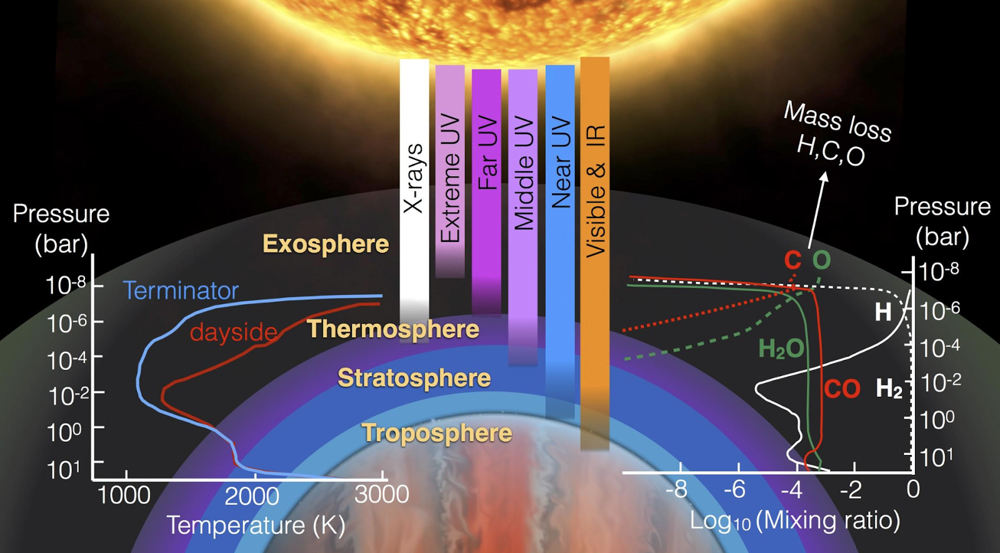
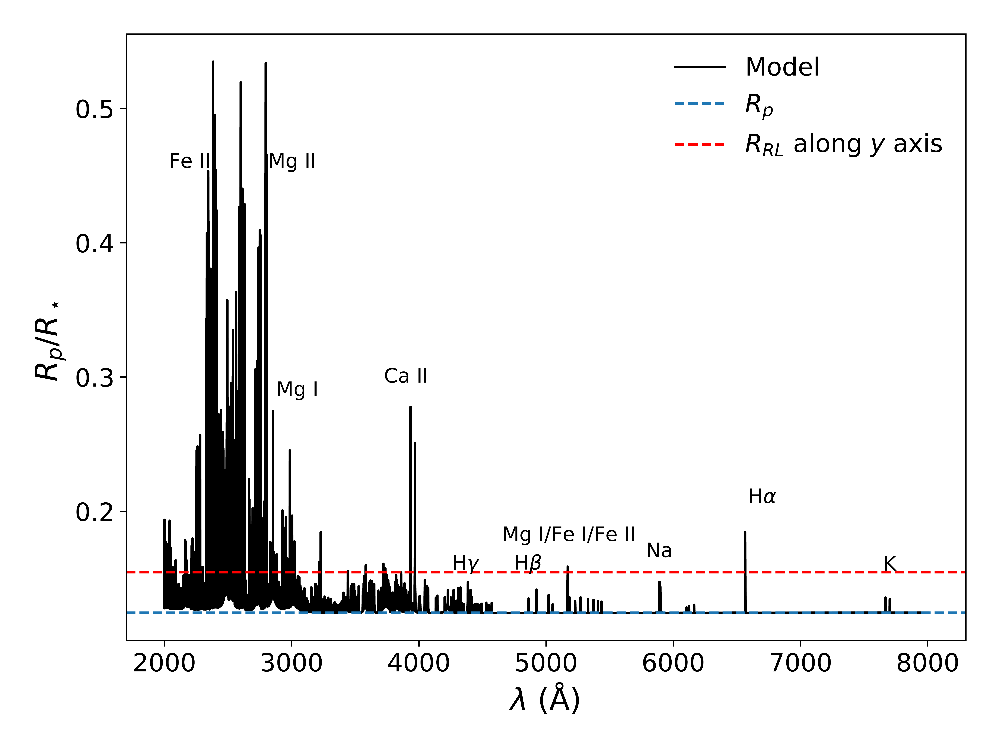
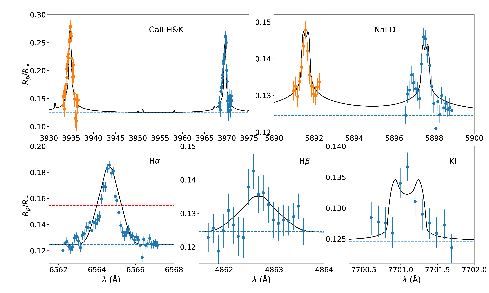

A succesful view of the total solar eclipse with Sun, Meng on Aug 21, 2017, on a lawn next to the Watts Bar lake, Knoxville, TN. The background of the banner of the webpage is the photo of total eclipse we took with this telescope, which was borrowed from UVa astronomy department.
My primary research focus is on the physics and chemistry of the middle and upper atmospheres of gas giant exoplanets, as well as their escape mechanism, through both observational analysis and theoretical modeling. Additionally, I have developed the interior structure model, MAGRATHEA, to provide valuable constraints on the compositions of terrestrial exoplanets. Furthermore, I have written a radiative transfer model to explore the physics of interacting supernova remnants.
Prior to joining SHAO, I completed two postdoctoral programs. From September 2017 to August 2019, I collaborated with Prof. Jason Steffen at UNLV. Subsequently, from August 2019 to October 2022, I worked alongside Prof. Tommi Koskinen at the Lunar and Planetary Laboratory, University of Arizona.
In 2017, I received my Ph.D. in Astronomy from UVa, under the mentorship of Prof. Phil Arras and Prof. Roger Chevalier. My doctoral research extensively focused on theoretical studies of exoplanet atmospheres and supernova remnants. Earlier, in 2011, I obtained my B.S. in Physics from Peking University.
Under the supervision of Phil Arras at UVa, we developed a hot Jupiter thermosphere model to explain the observed Hα and Na D transmission spectra of HD 189733b and constrain the properties of hot Jupiter upper atmosphere. We demonstrated that radiative excitation by Lyα is the dominant mechanism for H atoms and constructed a Monte Carlo simulation to model the resonant scattering process of Lyα photon in the upper atmosphere (Huang et al., 2017).
In collaboration with Tommi Koskinen, we have integrated the non-LTE level population of metal species and Lyα simulation into a hydrodynamic atmospheric escape model. This integration enables us to replicate all observed NUV and optical transmission spectrum characteristics of WASP 121b with a self-consistent model that spans the complete atmospheric pressure range (Huang et al., 2023).
Under the direction of Jason Steffen at UNLV and in collaborate with David Rice, we have developed an open-source C++ code for modeling the interior structure of terrestrial planets called MAGRATHEA. The code is designed to allow users to select from a vast library of EOSs and to add or modify materials and equations as needed (Huang et al., 2022). With MAGRATHEA, we have demonstrated the impact of new measurements of the EOS for water ice on our understanding of terrestrial planets (Huang et al., 2021).
Under the supervision of Roger Chevalier at UVa, we developed a model for radiation transfer attributed to electron scattering within the pre-shocked ionized circumstellar medium (CSM). This model aims to explain the observed broad component of emission lines, a characteristic feature of interacting supernovae (Huang & Chevalier, 2018).
A Model of the Hα and Na Transmission Spectrum of HD 189733b
Figure 1. Illustration of the transmission spectrum
Measuring the transit depth of planets as a function of wavelength, known as the transmission spectrum, allows us to probe their atmospheres. The stellar beams pointed at the Earth probe the transiting planet's atmosphere transversely along a chord perpendicular to the impact radius. Besides the opaque planet with radius Rp, the atmosphere blocks an additional amount of light. The scale of the brightness reduction at frequency ν due to planet and its atmosphere is equivalent to that of a bare planet with an equivalent radius of Rν. Since the opacity of molecules and atoms in a planet's atmosphere is a function of wavelength, they leave their imprint in the transmission spectrum. Transmission spectrum is the best tool for characterize the atmosphere near the planet's terminator.
Figure 2. Illustration of the Monte-Carlo simulation for Lyα
Cauley et al. (2015,2016) observed the Hα and Na D transmission spectra of the hot Jupiter HD 189733b using ground-based telescopes. These features are sensitive probes of planetary upper atmosphere because the excitation and de-excitation processes for H(n=2), the absorber of Hα, are strongly dependent on the local particle densities, temperature, and radiation field. Additionally, the line center transit depth of Hα and Na D of this planet are similar, indicating that the absorption of these lines is primarily contributed by the same region. Therefore, an atmosphere model of this region that can explain both absorption features could largely enhance our understanding of the upper atmospheres of exoplanets.
Following Christie et al. (2013), we constructed a spherically symmetric hydrostatic atmosphere model encompassing the region dominated by atomic hydrogen. The atomic hydrogen level population was computed including both collisional and radiative transition rates. The radiative rates between 1s and 2p determines n2p throughout the simulation domain because of the large Lyα intensity $\bar{J}_{Ly\alpha}$. Lyα may also play a role in the heating/cooling and ionization/recombination balance, so a detailed Lyα radiation transfer calculation is crucial.
We solved the Lyα resonant scattering numerically with the Monte-Carlo method, illustrated in Figure 2. The run of particle densities and temperatures versus radius from the hydrostatic atmosphere calculation were used to specify the Lyα source function, as well as the mean free path to scattering and true absorption. Both the incident stellar Lyα and internal sources due to recombination cascade and collisional excitation were included. The hydrostatic atmosphere and Lyα radiation transfer simulation were done iteratively until the result converges.
Figure 3. Number density of major species against the atmosphere pressure.
The combination of $\bar{J}_{Ly\alpha} \propto P^{-1}$ and increasing $n_{1s}$ with depth gives rise to an approximately flat H(n=2) around 104 cm-3 over two decades in pressure near the base of the thermosphere, where the temperature is in the range 3000 ~ 6000 K. Metal species, particularly Mg, Na, and Si, significantly contribute to the heating and cooling in this region. The number densities of Na I and H(n=2) are similar in the pressure region near 10-2 μbar, where the optical depths of Na D and Hα reach 1. This similarity explains the comparable transit depths observed for the Hα and Na D lines.
Using the temperature and number density of H(n=2) and Na I at each radius, the transmission spectra of Hα (Figure 4) and Na D (Figure 5) we obtained are in broad agreement with the observations of HD 189733b.
Figure 4. Simulated Hα transmission spectrum compared to observations.
Figure 5. Simulated Na D transmission spectrum compared to observations.
The black solid line represents the fiducial model, illustrated in Figure 3. To investigate the impact of stellar activity, the blue dotted line and red dashed line represent models where the incoming stellar Lyman continuum flux has been multiplied by factors of ξ=4 and ξ=1/4, respectively. An increase in stellar XUV flux can result in a deeper transit depth because it boosts the Lyα intensity within the atmosphere, subsequently increasing the H(n=2) number density. This could account for the observed differences in transit depths between the two observations. Unlike Hα, the transit depth of Na D is not significantly affected by the Lyman continuum radiation. This insensitivity is attributed to the fact that the temperature of the atmospheric layer probed by Na D is determined by metal species with lower excitation energies, which are not influenced by the Lyman continuum radiation.
The green solid line represents the model that assumes the abundance of Mg, which is the dominant coolant, is 10-4 times the solar abundance. Since metal lines are the dominant coolant in this atmospheric region, the atmosphere structure is sensitive to the density of species such as Mg and Na which may themselves be constrained by observations.
The host star of the planet, HD 189733, is an 8th magnitude star in the constellation Vulpecula, situated near the center of the Summer Triangle. It can be located with binoculars approximately 0.3 degrees east of the Dumbbell Nebula. The brightness and position of the star make it a ideal target for amateur telescope. Photo: I was observing HD 189733 through the 26-inch refractor telescope located at the McCormick observatory. It is an intriguing experience to have the opportunity to directly view the system I am studying with the naked eye.
A Hydrodynamic Study of the Escape of the Atmosphere of WASP-121b

Figure 6. Schematic of major physical processes in the planetary upper atmosphere (Credit: Mercedes López-Morales).
The escape of planetary atmospheres is a vital aspect of planetary evolution. Planets such as Venus, Earth, and Mars all underwent rapid atmospheric loss during their early formation. The formation of structures like the radius gap in the relationship between exoplanet radius and orbital period, as well as the hot Neptune desert, is widely believed to be associated with atmospheric escape. High spectral resolution transmission spectroscopic observations of the upper atmospheres of exoplanets offer a means to analyze atmospheric structures during the escape process, thereby deepening our understanding of atmospheric escape mechanisms.

Figure 7. Simulated optical and NUV transmission spectrum of WASP-121b.
We conducted an in-depth study of the ultra-hot Jupiter WASP-121b. WASP-121b is one of the most extensively and highest-quality studied planets in terms of transmission spectroscopic observations. It exhibits absorption signals from a wide range of elements in the optical and near-ultraviolet (NUV) bands, observed with high spectral resolution. The transmission spectrum reveals that features of Hα, Ca, Mg, and Fe extend beyond the planetary Roche lobe, providing clear evidence of direct atmospheric escape from the planet.
By incorporating the Lyα simulation and the non-LTE level population of metal species into the hydrodynamic atmospheric escape model, the simulation was able to reproduce nearly all detected spectral features. The matching of multiple atomic/ion spectral line features with a self-consistent atmospheric model for the first time, offers significant constraints on the structure and escape rate of planetary atmospheres.

Figure 8. Compare simulated transmission spectrum with optical observation conducted by VLT/ESPRESSO.
Figure 9. Compare simulated transmission spectrum with NUV observation conducted by HST/STIS.
The modeled atmospheric mass loss rate is several times higher than the energy-limited photoevaporation rate commonly employed in atmospheric escape theory. This finding suggests that for WASP-121b, Roche lobe overflow, rather than photoevaporation, is the predominant mechanism driving atmospheric escape. Motivated by these results, I collaborated with my postdoc advisor, Prof. Koskinen, to explore the parameter space where mass loss is primarily driven by photoevaporation and Roche lobe overflow, respectively (Koskinen et al., 2022).
Terrestrial Planets Interior Structure Solver MAGRATHEA and Its Applications
Terrestrial planets may be essential to life because of their solid or liquid surfaces. Interior structure models estimate the radius of terrestrial planets with given masses and compositions. Such models are important in several ways. For example, for planets whose mass and radius are well determined through observation, their interior structure and composition can be roughly constrained by comparing observed values with planet model. Planet interior structure also determines the tidal energy dissipation rate of planets, which is required to study the dynamical and tidal evolution of close-packed planetary systems, such as TRAPPIST-1. Additionally, the late stage of planet formation involves extensive collisions between Mars-sized embryos, which is typically modeled through N-body simulations. The collision timescale, is dependent on the embryo radii.
Figure 10. A schematic overview of MAGRATHEA showing the input (left), four layer structure (center), and the pressure and temperature with enclosed mass (right).
We have developed an open-source, compact, and user-friendly C++-based terrestrial planet interior structure code MAGRATHEA that have broad applications. Following the approach in Zeng et al. (2016), we assume a fully differentiated planetary interior. The model solves the ordinary differential equations with a two-point boundary value problem using the shooting method to a fitting point. MAGRATHEA currently consists of four concentric spherical layers: iron, rock, ice, and a gas layer. It provides users with the flexibility to select their own combinations of equation of states (EOSs) for the planet's building blocks from the program's extensive EOS library. Additionally, users can utilize the common interface to modify existing EOS and phase diagrams or add new ones to tailor the program to their specific needs.
A schematic overview of MAGRATHEA is presented in Figure 10. In the left of the figure, it shows an example input of a 1.1 Earth mass planet. The figure illustrates an example input for a 1.1 Earth mass planet. The center panel displays MAGRATHEA's four input layers, along with sketches of phase diagrams defined for each layer and the EOS chosen for each phase. The right panel shows the pressure and temperature with enclosed mass. The radius at boundaries and the planet radii is also shown.
Figure 11. Mass-radius curve of planet models compared to observational data.
Motivated by our collaboration with high-pressure physicists at UNLV, who significantly improved the measurement accuracy of the phase diagram and EOS of water ice, we utilized MAGRATHEA to investigate how uncertainties in experimental EOSs affect predictions of planetary interiors. Figure 11 shows a mass-radius relation plot for two-layer models, with solid mass-radius curves representing models that incorporate the new water ice EOS. To propagate the uncertainty from EOS fitting to the planet radius, we recalculated each planet mass-radius curve 1000 times, using randomly chosen posteriors of EOS fitting parameters generated by MCMC. The narrow bands enclosed by the dash-dotted lines surrounding the solid lines indicate the 1σ error bar, which accounts only for the statistical uncertainty of EOS fitting. Dotted curves show the result from Zeng et al. (2016), which considered the effects of planet interior temperature variations. The dashed curves provide a more direct comparison to our results by removing the temperature dependence. Planets whose radii and masses are measured to better than ~10% and ~20%, respectively, are plotted and color-coded by their surface temperatures. The inset plot illustrates the percent difference in isothermal planet radius due to EOSs (solid line with dashed line). The increased planet radius suggested by the new EOS is larger than the radius uncertainty of many planets. Consequently, the contribution of the atmosphere or water content to the planet structure for planets such as π Mensae c, Kepler 10c, and EPIC 246471491b may be less than previously inferred.
Electron Scattering Wings on Lines in Interacting Supernovae
Figure 12. Illustration of the scattering region.
Interacting supernovae provide evidence of strong shock interaction between their ejecta and pre-existing circumstellar material (CSM), which may have been ejected from the unstable progenitor star prior to the explosion.
Once the supernova shock wave has broken out of the progenitor star, the ionizing radiation from the shock region can ionize the surrounding medium. The CSM can have a substantial optical depth to electron scattering, with the continuum photosphere located in the unshocked CSM due to electron scattering opacity. The iconic feature in their spectra is the broad wings, which can reach velocities of thousands of km/s, associated with narrow emission lines. To explain the formation of this feature, we adopt the idea that the narrow emissions originate in the preshock ionized CSM through recombination cascades, and the line profiles are broadened by the electron scattering as the photons escape. This unified model accounts for both the narrow and broad components of the feature.
Shown in Figure 12, the Monte-Carlo simulations were carried out in spherical symmetry, with the scattering medium situated between the absorbing inner boundary (R1), which can represent a shocked shell, and a large escaping outer radius (R2), signifying the outer boundary of the ionized dense CSM. A photon generated in the wind gas can either: a) be absorbed by the inner boundary, b) escape the medium from the outer boundary without scattering, contributing to the narrow component of the spectrum, or c) escape from the outer boundary after undergoing multiple scatterings, contributing to the broad component.
Figure 13. Comparison of the electron scattering model with the SN 2011ht Hα emission line.
We investigated the dependence of the line profiles on various parameters, including the optical depth, the density distribution, and the velocity profile of the CSM. The line shape is approximately exponential. The radial velocity of CSM can cause an asymmetry, leaning towards the red. We compared the electron scattering model to a number of supernovae, including Type IIn and Type Ia-CSM events.
The Hα spectrum of SN 2011ht, with the black body continuum subtracted (as shown by the black line in Figure 13), exhibits a narrow component and a broad component with an enhanced red wing (note the exponential scale on the y-axis). This can be explained by a model (represented by the red line) that includes expanding CSM with an electron scattering optical depth of τ=3.5, a temperature of 12,000 K, and an expansion velocity of 600 km/s. A broad helium emission feature creates a bump on the red wing around 5000 km/s.